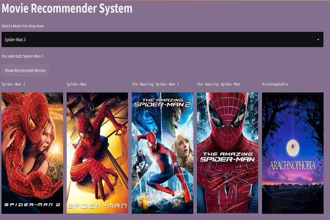
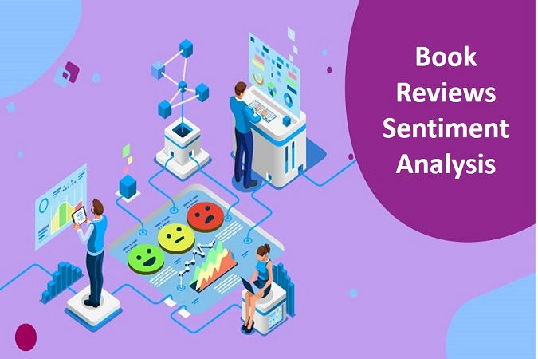
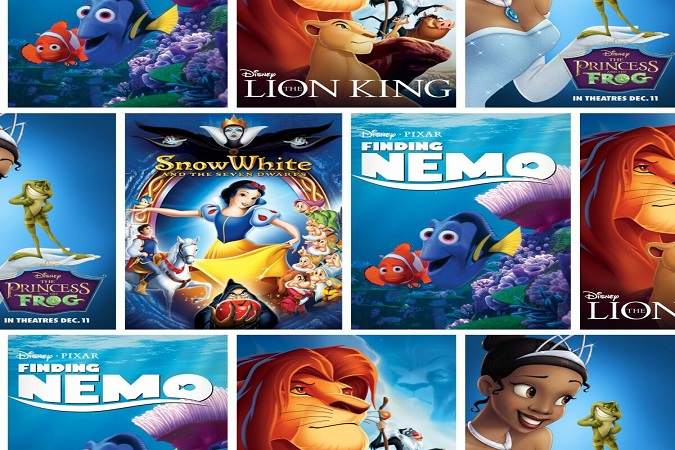
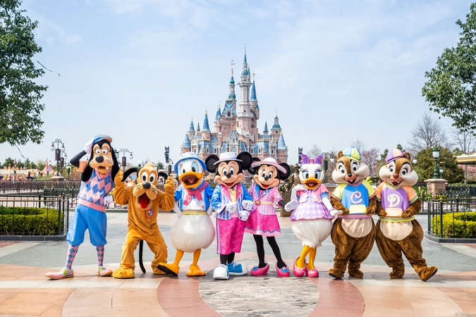

unsure what movie to watch next? This free movie recommendation engine suggests a movie based on your selected movie.
Select a movie from drop down and this recommender will suggest 5 movies that you can enjoy based on your selection
In this challenge, as a data scientist of a bank, I was asked to analyze the past data and predict whether the customer will churn or not in the next 6 months.
This would help the bank to have the right engagement with customers at the right time.
Objective is to build a machine learning model to predict whether the customer will churn or not in the next six months.

Sentiment analysis is the process of determining the opinion, reviews or feeling expressed as either positive, negative or neutral.
Capturing the exact sentiment of a review through text is a challenging task.
In this project I explored various techniques to extract the sentiment of each review.

For this project I performed scraping of data availale on wikipedia for disney movies such as Title, Directed by, Produced by, Written by,
Narrated by, Music by, Cinematography, Edited by, Production company, Distributed by, Release date, Running time, Country, Language and
used OMDb API to get imdb, metascore, rotten_tomatoes data created a structured dataset of disney movies which can be used for further analysis.
The final data is stored as CSV.

For this project I developed a Used Car Price Prediction system which can effectively determines the price of a vehicle using various features.
I used a Regression Algorithms which can provide us with a continuous value as recommended selling price.

Though this NLP study, I wish to identify customer sentiment regarding Disney Land experience based on reviews by visitors.
I used textblob, vader, nltk, NRCLex, spacy, genism libraries in python to carry out sentiment analysis, emotion detection, and n-gram associations.
I have also done topic modelling using which we can identify visitor pain points and improve park experience.